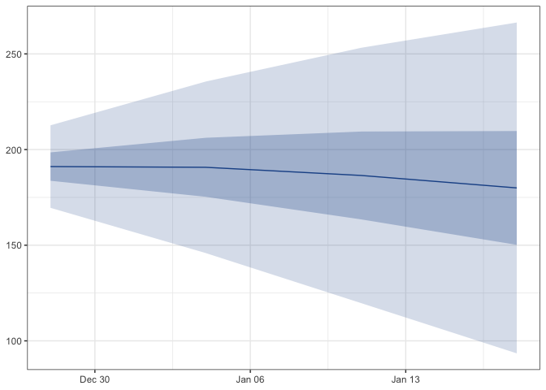

Hospital census forecasts from hubverse admission forecasts.
censcast convolves hubverse format admission quantile forecasts with a length of stay (LOS) distribution to produce hubverse format census quantile forecasts. Same schema in, same schema out.
where d is the lag in time steps since admission, and P(LOS > d) is the probability a patient is still in hospital d steps after they arrived.
Example
library(censcast)
los <- spec_los("negbin", mu = 2, k = 1.7, max_stay = 8)
census_fcast <- fcast_census(admission_forecast, los, admission_history)
plot_fan(census_fcast)
admission_forecast and admission_history are toy datasets shipped with the package. In real use, swap them for outputs from hubData::connect_hub() and hubData::connect_target_timeseries(). See the vignette.
API
| Function | Role |
|---|---|
spec_los() |
LOS survival vector from literature priors. |
fit_los() |
Fit LOS survival from observed (admissions, census). |
fcast_census() |
Convolve hubverse admissions × LOS → hubverse census. |
plot_fan() |
Quantile fan chart, returns a ggplot. |
score_census() |
Optional WIS via scoringutils. |